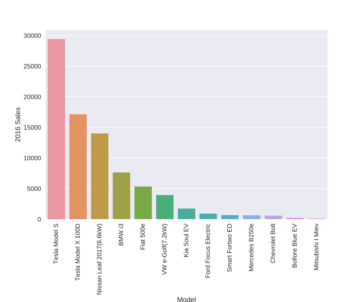

Can Parked Cars and Carbon Taxes Create a Profit?
The Economics of Vehicle-to-Grid Energy Storage
for Peak Reduction
Heta Gandhi, Gerad Freeman, Andrew White
ACS, New Orleans
March 19th, 2018
Renewables Contributed $\sim 12\%$ to The U.S. Energy Production in 2016

Renewables Have Been Rapidly Increasing..

Renewables Induce Variations in the Price of Electricity

A smooth version shows the structure of prices

Grid Level Energy Storage Can Solve This
Grid level energy storage is expensive
Solution: Electric vehicle to grid uses electric vehicle battery capacity as grid level energy storage
Electric Vehicle To Grid
Open Questions
- Does it impact at grid-scale?
- Is it economical for an EV driver?
- Is it economical for a utility?
- Are there negative effects of coupling commute times to grid generation?
Our Previous Work
- Economics of V2G in New York City
- Use of location based marginal pricing (LBMP)
- Accounts for battery cycling and degradation
- Two scenarios
- Work-hour Price-taker
- Optimal Selling Price

Methods
Battery degradation cost$^1$
$$c_{dgdn} = \frac{E_{s,max} c_b}{2\ DoD \ L_c E_{s,max}}$$
$c_{dgdn}$: Cost of battery degradation
$E_{s,max}$: Battery capacity(kWh)
$c_b$: Battery capital cost ($ /kWh)
$DoD$: Depth of discharge
$L_c$: Battery lifecycles
- Kempton, et al. J. Power Sources 2005 144:268-294
Revenue from V2G
$$r(t) = (E_s(t - 1) - E_s(t))\ \eta\ LBMP(t)$$
Savings from V2G
$$S= \sum_{working\ days} \bigg[ \Big(\sum r(t) - \sum (c_{ch}(t) + c_{dgdn}(t))\Big)_{V2G} \\ - \Big(\sum (0 - (c_{ch}(t) + c_{dgdn}(t))\Big)_{Commute} \bigg]$$
$c_{ch}$: Price of charging
$r(t)$: Revenue earned from V2G
$E_s(t)$: Battery's remaining capacity at time t
$LBMP(t)$: Location based maginal price at time t
$\eta$: Round trip efficiency of the vehicle
Results


Results from similar studies
- A similar study in Spain concludes that V2G is not profitable if power is sold continuously at time-of-use prices and battery capital price will have to reduce significantly before V2G is profitable. $^1$
- Results from a study in UK shows that V2G with additional income from the capacity market results in good profits, producing a net present value of £8400 over 10 years for an EV that sells electricity three times every week and includes cost of infrastructure installment.$^2$
- And many more
- Dufo-López, et al. Energy Conversion and Management2015 91:394-404
- Gough, et al. Applied Energy2017 192:12-23
The Problem Statement
- Assumptions of the model
- Commute distance is constant at 7.7 miles.
- It takes 1 hour to commute between home and work.
- Work day is always nine-to-five.
- Problems
- The model is deterministic.
- It doesn't use Real data and Statistics
- EV Drivers may have variable behavior and work cultures.
Let's try to modify the model to be more Realistic...
Statistical Stochastic Models of Vehicle-to-Grid
What did we change?
- NHTS$^1$ and ACS$^2$ data were used to sample
- Commute Distance to work
- Commute Time to work
- Hours worked per week
- Time of work
- National Household Travel Survey. Federal Highway Administration, U.S. DoT 2017 URL: http://nhts.ornl.gov.
- ACS Public Use Microdata Sample. U.S. Census Bureau 2017
Methods
- Base years are 2014 and 2017
- Tesla Model S
- Sample size of $\sim$ 2500
2014 Results from the New Model

2014 Results from the New Model

What about other cities?
Annual Savings for Multiple Cities

- Price Taker: Sell each day, regardless of price
- Optimial Selling Price: Sell when above optimized price
Annual Savings for Multiple Cities

Exploring the Difference between NYC & SFC

How do these results hold with different EV Models? 
Results for mutliple EV models


How do these results hold with falling battery costs?

Results for Extrapolated Battery Capital Costs

Conclusions
- V2G is rarely profitable, even with cheaper batteries
- Depreciation due to cycling battery is major cost
- Savings from V2G depend on:
- Commute and work parameters
- Battery capacity of EV
- Under any combination of these parameters, pricetaker scenario is not profitable.
- We have built model for battery usage of V2G users
Future Work
- See the impact of V2G at grid scale
- See how utilities are affected by V2G
- Given our charge discharge cycles, what role could battery chemistry play in this?
- Can we change user behavior, beyond state of charge limit, to minimize battery degradation?
Acknowledgements
- Department of Chemical Engineering, University of Rochester for financial support
- Dr. Thomas Drennen
- Members of the White Lab